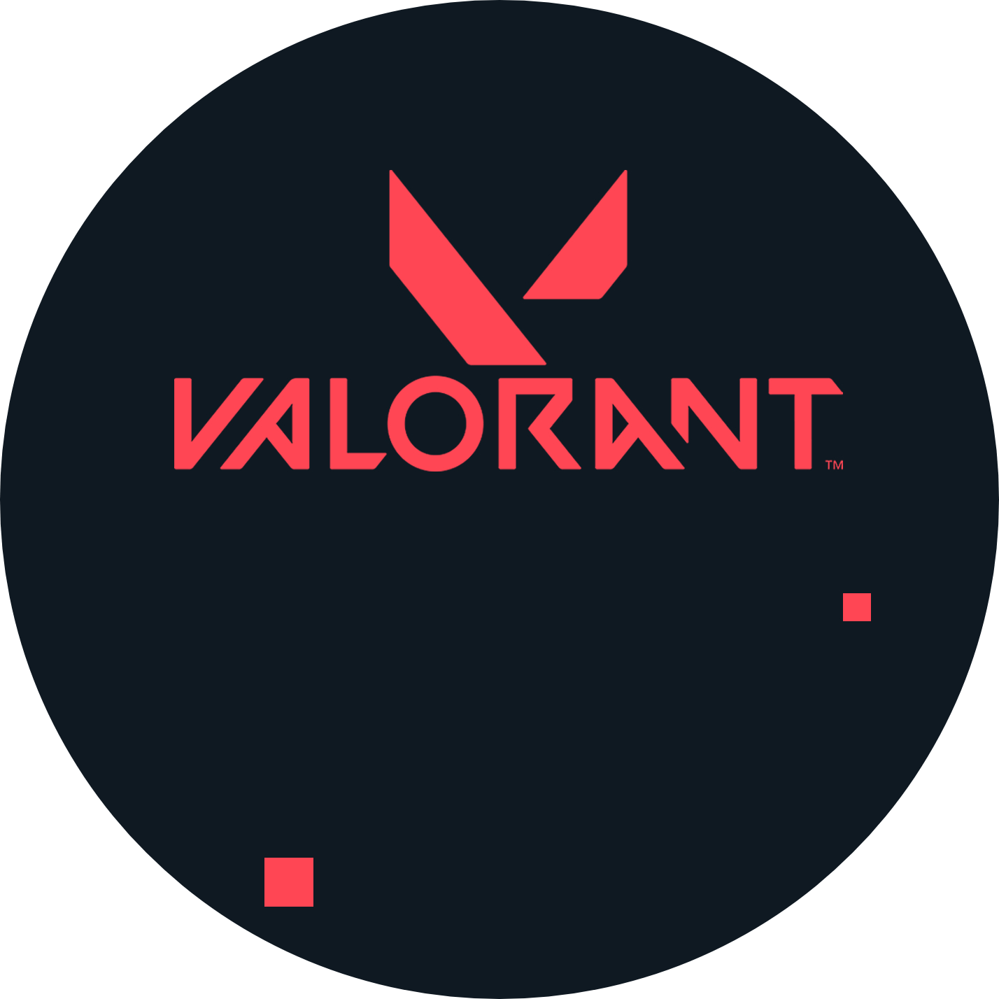

DEFY THE LIMITSVALORANT is your global competitive stage. It’s a 5v5 tac-shooter matchup to plant or defuse the Spike in a one-life-per-round, first to 13 series. More than guns and bullets, you’ll choose an Agent armed with adaptive, swift, and lethal abilities that create opportunities to let your gunplay shine. Valorant: It’s a 5v5 multiplayer first-person shooter (FPS) where one team attacks and the other defends. The main game mode, Search and Destroy, is very similar to CS:GO. The attacking team’s goal is to plant a bomb (called a spike) and have it detonate, while the defending team tries to avoid that. Regardless of whether the spike is planted or not, if a squad is wiped out before any other victory condition is met, the opposing squad will win. |
 |
GAMEPLAYValorant:Is a shooting-based tactical shooter and first-person shooter set in the near-future. Players play as one of a set of agents, characters designed based on several countries and cultures around the world. In the main game mode, players are assigned to either the attacking or defending team with each team having five players on it. Agents have unique abilities each requiring charges, as well as a unique ultimate ability which requires charging through kills, deaths, or spike actions. Each player starts each round with a "classic" pistol and with one or more "signature ability" charge. Other weapons and ability charges can be purchased using an in game economic system which awards money based on the outcome of the previous round, any kills the player is responsible for, and any actions taken with the spike. The game has an assortment of weapons including sidearms, submachine guns, shotguns, machine guns, assault rifles and sniper rifles. Automatic and semi-automatic weapons such as the "Spectre," "Odin," and "Vandal" have recoil patterns which have to be controlled by the player in order to be able to shoot accurately. |
|
Spike Rush: The match is played as best of 7 rounds - the first team to win 4 rounds wins the match. Players begin the round with all abilities fully charged except their ultimate, which charges twice as fast as in standard games. All players on the attacking team carry a spike, but only one spike may be activated per round. Guns are randomized and every player begins with the same gun. Ultimate point orbs present in the standard game are not present, but sometimes a power-up orb will appear in their place.
Competitive: Matches are the same as standard matches with the addition of a win-based ranking system which assigns a rank to each player after 5 games are played. In July 2020, Riot introduced a "win by two" condition for competitive matches, where instead of playing a single sudden death round at 12-12, teams will alternate playing rounds on attack and defense in overtime until a team claims victory by securing a two match lead. Each overtime round gives players the same amount of money to purchase guns and abilities, as well as approximately half of their ultimate ability charge. After each group of two rounds, players may vote to end the game in a draw, requiring 6 players after the first set, 3 after the second, and thereafter only 1 player to agree to a draw.
Valorant: Was developed and published by Riot Games, who have previously developed League of Legends. Development started in 2014, within their research and development division. Joe Ziegler, Valorant's game director, is credited with the initial idea of Valorant while formulating potential games with other Riot developers. David Nottingham is the creative director for Valorant. Trevor Romleski, former League of Legends's designer and Salvatore Garozzo, former professional player and map designer of Counter-Strike: Global Offensive are game designers for Valorant. Moby Francke, former Valve developer, who has been art and character designer for Half-Life 2 and Team Fortress 2, is the art director.
During development, Riot Games made promises to work towards a ping of less than 35 milliseconds for at least 70% of the game's players. To accomplish this, Riot promised servers in or near most major cities in the world, as well as working with internet service providers to set up dedicated connections to those servers. Due to the increase in internet traffic during the COVID-19 pandemic, Riot has had trouble optimizing connections and ping to their promised levels.
Valorant was teased under a tentative title Project A in October 2019. It was announced on March 1, 2020, with a gameplay video on YouTube called "The Round". The closed beta of the game was launched on April 7, 2020. For a chance to obtain a beta access key, players were required to sign up for accounts with both Riot Games and the streaming platform Twitch and watch related streams. This beta ended on May 28, 2020, with the game being fully released on June 2, 2020.
 JETT |
From Korea comes JETT, an agile fighter who prioritizes movement over everything. Her abilities include a teleportation-based dash and an updraft that lets her reach higher ledges. She also has a smokebomb ability to hinder sightlines and a powerful Bladestorm ultimate that deals moderate-to-heavy damage and remains accurate even while she's moving | |
 PHOENIX |
PHOENIX'S star power shines through in his fighting style,igniting the battlefield with his flash and flare. Whether he’s got backup or not,he’s rushing in to fight on his own terms. The fiery Brit can wield the power of flame to essentially reshape the battlefield into how he sees fit. With exploding fireballs that damage enemies and heal him, a vision-blocking wall of fire, and a blinding fire burst, Phoenix is great at manipulating the flow of the match. His ultimate grants him the ability to be reborn if he's killed during its duration, galvanizing him to make bold moves he wouldn't otherwise make | |
 RAZE |
RAZE loves explosives. With her blunt-force-trauma playstyle, she excels at flushing entrenched enemies and clearing tight spaces with a generous dose of "boom" Raze's playstyle is very aggressive compared to many of the other agents in VALORANT, as most of her abilities are focused on mobility and damage instead of intel gathering or support. She is one of the few agents where most of her abilities are primarily meant to deal damage, namely Paint Shells and Showstopper, and has commonly been criticized by the community for said abilities. | |
 REYNA |
Forged in the heart of Mexico,REYNA dominates single combat, popping off with each kill she scores. Her capability is only limited by her raw skill, making her highly dependent on performance. Reyna has the passive ability of Soul Harvest, enemies killed by Reyna leave behind Soul Orbs that last 3 seconds. Soul Harvest abilities consist of Devour and Dismiss which have a shared usage pool. |

COME AND BUY NOW (VALORANT SHOP) VALORANT SHOP